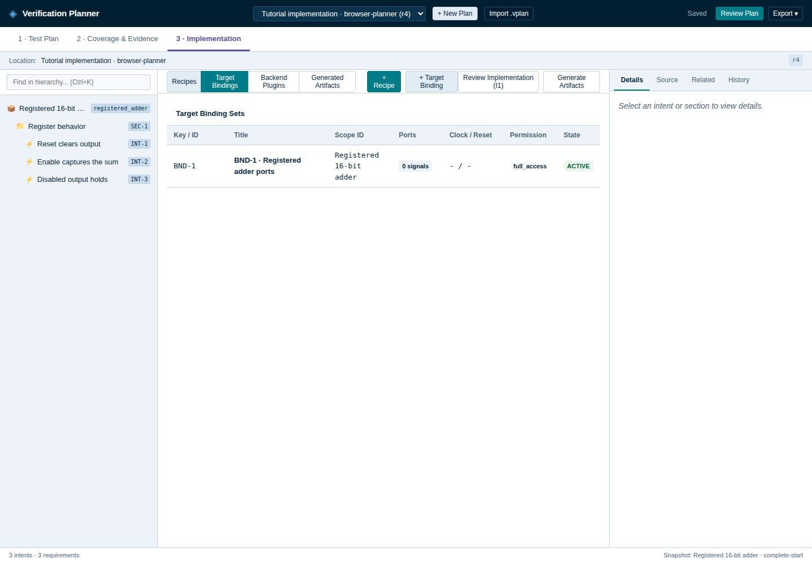
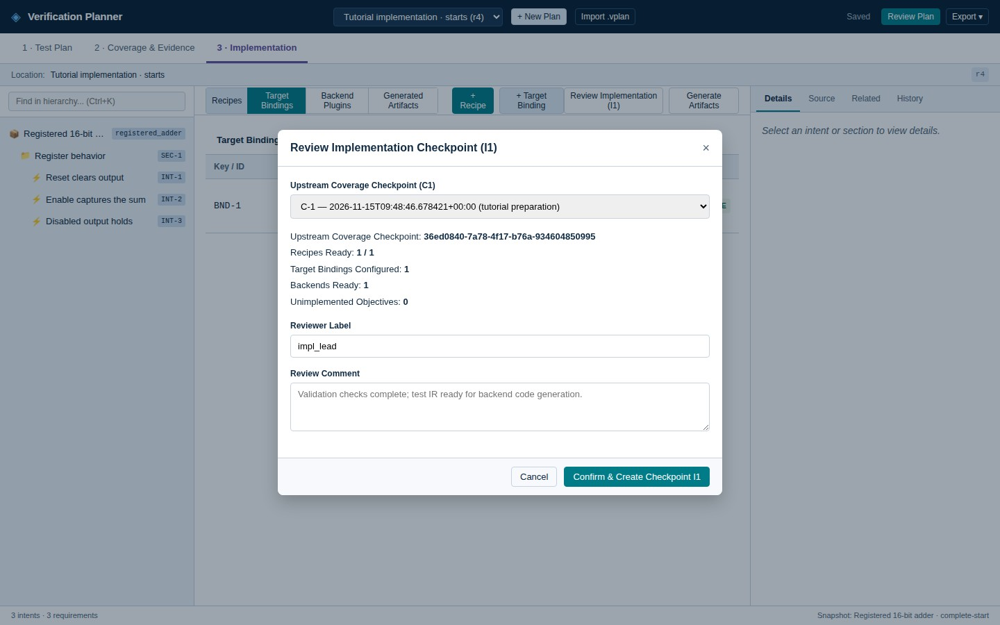

VERIFICATION PLANNER · 8 MINUTES
Review recipes and generate references
Freeze I1 and inspect reference artifacts without claiming an executed test.
Before you start
Verification Planner and the prepared Tutorial implementation plan. It includes P1, C1, target bindings, and one ready recipe; no I1 is present.
Actions
- Select Tutorial implementation with your run name in the plan selector. Open 3 · Implementation, then Target Bindings. Inspect the six signal names, widths, input-drive and output-sample permissions, rising clock, and synchronous reset.
- Open Recipes. Inspect the ready recipe and its Test IR. It drives reset, captures 7 + 9, then changes inputs with enable low. Inspect the explicit checks for zero, sixteen, and held sixteen. Expected values are independently stated reference values.


- Inspect Backend Plugins. The selected backend is
spec2gds.reference.bundleversion 1.0.0. It publishes reference files and a synthetic result template. - Select Review Implementation (I1). Choose C1, read blockers and the checklist, then confirm with your reviewer label. Open Generate Artifacts, select I1 and the reference backend, and use Preview Capabilities & Preflight before running.
- Inspect Generated Artifacts. Open the Test IR, target bindings, recipe, producer manifest, validation report, and synthetic result template. Hardware simulation occurs outside Verification Planner and its results must be imported separately.


Check your result
I1 identifies the reviewed implementation inputs. Reference generation succeeds and its artifacts identify their source. No executable hardware test or simulation pass is claimed.
Try it yourself
Find the output sample binding and the check that maps its observation to a correctness objective.
If it fails
If generation is blocked, inspect missing mappings, permissions, upstream C1, and recipe readiness. Resolve those source issues before repeating preflight.
Continue
CONTINUEExplore another feature →Reference: verification planner · Complete example